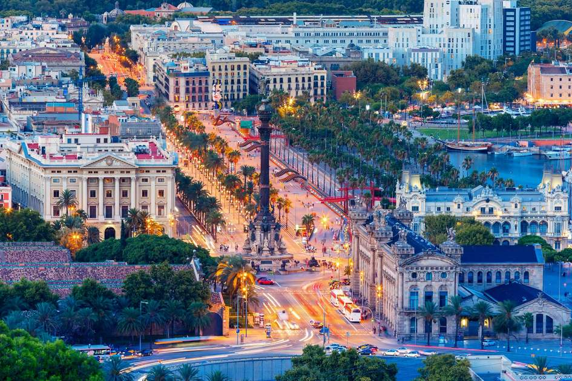

The summer I graduated from high school, my best friend and I decided to take a trip to Spain. Our original plan was Portugal but when we realized that the water in the ocean was not really warm, we changed our mind and choose Barcelona, Spain instead. We were teenagers without jobs so we were pretty broke and our budget was very limited. We worked a little bit during the summer just to save enough money and at the end of the summer, we were ready to go. One of my favorite things about traveling is just planning a trip so I really immersed myself in finding plane tickets and accommodation. Somehow we found these cheap round trip tickets from Hungary to Spain with one stop in Belgium. I still remember that excitement when we finally left. We took the overnight train from Belgrade to Budapest, Hungary, and arrived there early in the morning. We had one day to spend in Budapest before our flight in the late afternoon so we had some time to tour the city. I’ve been to Budapest quite a few times but you can never get enough from it since it is one of the most beautiful European cities. After a nice tour, we went to the airport and flew to Brussels, Belgium, arriving there in the late evening. One thing I missed as I was booking tickets was that there are two airports in Brussels and the one that we arrived at was quite far from another one that we had a flight to Barcelona from. There was another long night ahead of us and since didn’t want to pay expensive shuttle bus, we started hitchhiking the get from one airport to another. A few weeks before that, there were terroristic attacks at the Brussels airport and after that, the police were very cautious. As hitchhiking was not very common in Belgium, someone reported us and the police came. And here we were, in the middle of the night, stuck in some obscure airport in Belgium, with police searching our luggage with guns and flashlights pointed at us. They didn’t find anything so we were good to go but we were not allowed to hitchhike so we had to pay for the shuttle. Finally, the next evening we arrived in Barcelona and we were dead tired but super happy. The direct flight from Belgrade to Barcelona would probably take us two hours and the way we choose took us long two days. At least it was a good adventure.
We booked an Airbnb room from a guy named Miguel and we were ready to dive into the city. Barcelona was breathtaking! Probably my favorite European city and one of the favorites I visited in general. Very nice, almost tropical weather, crowded streets and beaches, beautiful architecture, and most importantly, warm and chill people. I loved that feeling of just waking up in the morning in the middle of Barcelona and having all day long and freedom to explore the city. We walked so much around the city but we never felt tired. Our favorite place we would go to everyday was Barceloneta beach. We would usually spend days there and then evenings and nights around the city.
Barcelona is too big and attractive to pick only two most famous places but if I could only choose two landmarks of the city, those would be Las Ramblas street and Barcelona Cathedral. Las Ramblas is a large and lengthy boulevard that runs through the heart of the city centre. It is just very colorful, eventful and alive. There is always something going on there and we loved spending most of our evenings there.
Barcelona Cathedral is probably the symbol of the city. It is absolutely stunning and unique from both inside and outside. In this case especially, pictures will speak 1000 words. After a week or so, it was time for us to go back. We were sad to leave but grateful for the opportunity to visit this magical city. We sure hope to come back someday Barcelona!

Bonus Picture - Public toilets in Barcelona
Next page